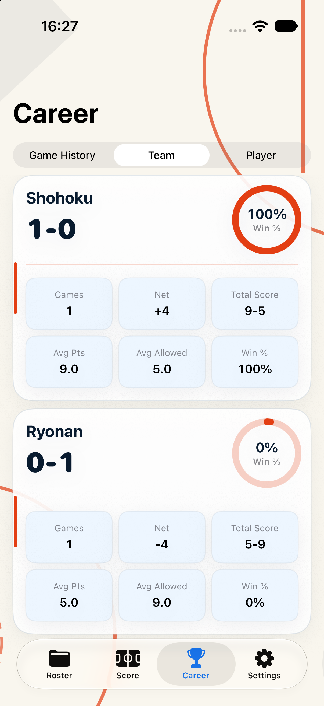
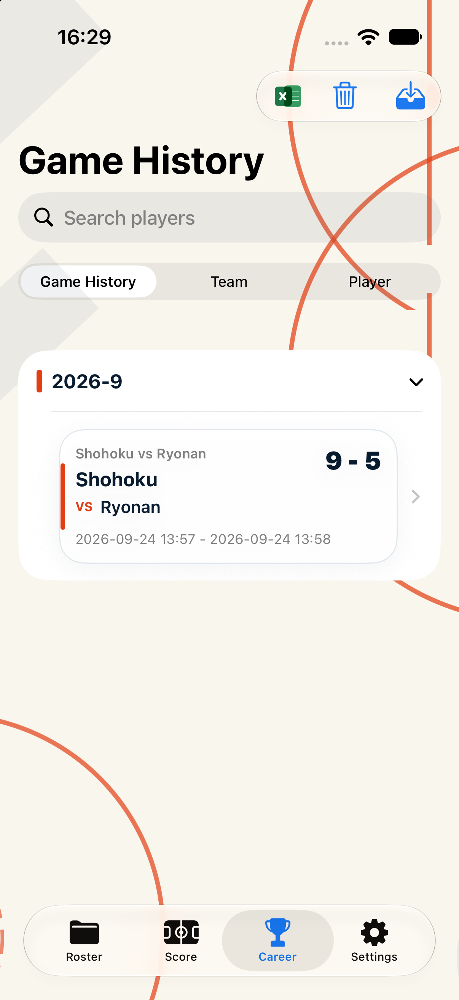

已完成并通过模拟器验收
本次补齐了 Career 内尚未修改的「球队」和「比赛记录」两个 tab，沿用已确认的 Adaptive A 风格。
BasketballRecord/Views/Game/ 下的记分操作界面，也没有新增存储字段或本地化 key。

xcodebuild ... build：成功。git diff --check：通过。git diff --name-only -- BasketballRecord/Views/Game/：无输出，记分页面未被修改。